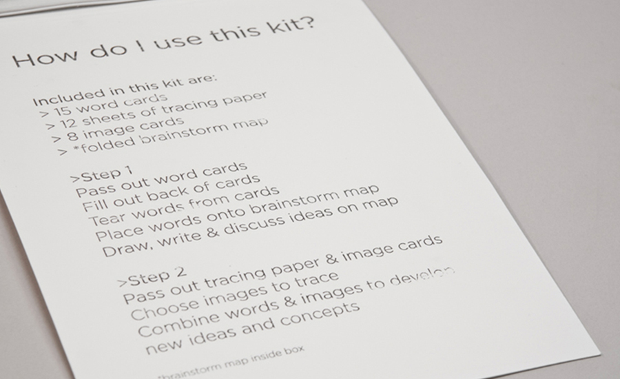
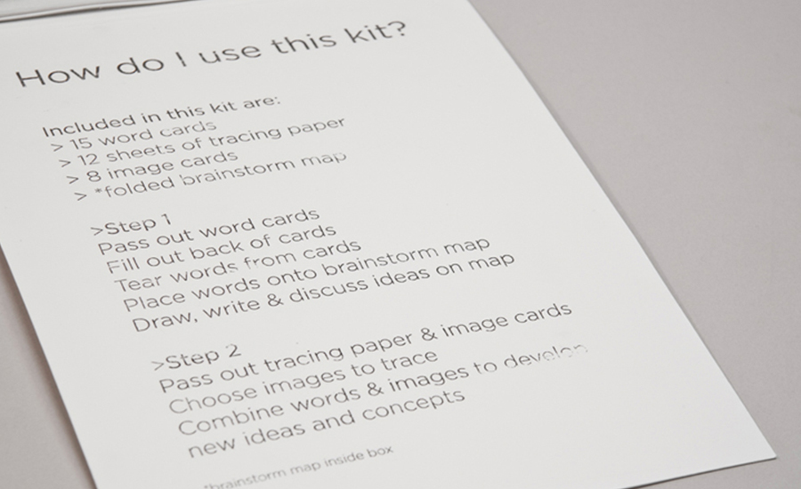

It was a series of collaborative design workshops with four groups of middle school students (14 total) in Providence, Rhode Island as clients and test subjects. Their tasks were to figure out a daily problem at school and then solve it by redesigning it.
What resulted from three co-design workshops was a set of collaborative design tools that improved our brainstorming sessions, simplified the design process and helped non-designers understand what it took to design an object.

At the end, four groups of the co-design students achieved to propose re-design ideas: microwave waiting line, a better locker room, a butt sensitive toliet, and a stylish school bag.


 
